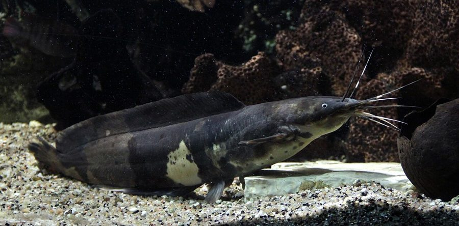

मांगुरWalking Catfish
Clarias batrachus · Clariidae · FSH-0004

- Scientific name
- Clarias batrachus (Linnaeus, 1758)
- Family
- Clariidae
- Hindi
- मांगुर
- Status here
- native
- IUCN
- LC
When to look कब देखें
Present all year.
मांगुर / Walking Catfish
Clarias batrachus (Linnaeus, 1758) — Clariidae
मांगुर — पूर्वी उत्तर प्रदेश के ग्रामीण जलाशयों के कीचड़दार तलों में रहने वाली एक प्रसिद्ध बिना शल्क (scales) की मूंछदार मछली। इसके मुंह के चारों ओर आठ संवेदी मूंछें (barbels) और पीठ पर एक बहुत लंबी पंख (dorsal fin) होती है। इसके पास एक विशेष सांस लेने वाला अंग (dendritic organ) होता है जो इसे पानी से बाहर सीधे हवा से सांस लेने की अनुमति देता है। मानसून की भारी बारिश के दौरान, यह अपने नुकीले छाती के कांटों (pectoral spines) के सहारे गीली ज़मीन पर रेंगकर एक तालाब से दूसरे तालाब में जा सकती है। यह पौष्टिक होने के कारण बहुत लोकप्रिय है, लेकिन इसे प्रतिबंधित विशालकाय अफ्रीकी मांगुर से अलग पहचानना आवश्यक है।
Quick Identification त्वरित पहचान
| Feature | Description |
|---|---|
| Form | Elongated, cylindrical body; completely scaleless and covered in a thick protective mucus layer |
| Head | Broad, flattened, covered with hard bony plates; mouth surrounded by 4 pairs of long, tactile barbels (whiskers) |
| Fins | Very long dorsal fin (60–75 rays) extending along the back; long anal fin (45–55 rays) along the belly |
| Pectoral Spines | Stout, sharp, finely serrated pectoral spines (stings) used for defense and crawling on land |
| Coloration | Dark greyish-brown to olive-black on the back; belly is pale, muddy yellowish-white |
| Locomotion | Unique snake-like wriggling movement on land, using pectoral spines as anchors |
Field tip: Look for a scaleless dark grey-brown catfish with 8 whiskers and a very long dorsal fin. If found crawling across wet grass during heavy monsoon rains, it is definitely a Walking Catfish. Caution: handle carefully as the sharp spines on the side fins can cause a painful puncture wound.
Morphology आकारिकी
Biometrics (typical measurements in Gangetic plain populations):
| Measurement | Range |
|---|---|
| Standard length (SL) | 20–35 cm |
| Total length (TL) | 25–45 cm |
| Weight | 200–600 g |
Body: Elongated, cylindrical anteriorly and compressed towards the tail. The skin is smooth, scaleless, and rich in mucus-secreting cells.
Head: Flattened dorsally, covered with tough, bony outer plates. The mouth is wide and terminal, surrounded by four pairs of barbels (1 pair nasal, 1 pair maxillary, and 2 pairs mandibular) that serve as sensory feelers in dark, muddy waters.
Fins: The dorsal fin is exceptionally long, spanning almost the entire length of the back (60–75 soft rays), without any spines. The anal fin is also long (45–55 rays). Pectoral fins are equipped with a stout, sharp, bone-like spine which is finely serrated on the inner edge.
Air-Breathing Organ: Inside the upper part of the gill chamber, it possesses a specialized, tree-like branching organ (the suprabranchial dendritic organ) which functions as an accessory lung, allowing the fish to absorb oxygen directly from the air.
Ecological Role पारिस्थितिक भूमिका
Benthic scavenger. Clarias batrachus is a bottom-dwelling carnivore and detritivore. It uses its barbels to search through thick mud, feeding on worms, insect larvae, organic debris, and small dead organisms, helping recycle nutrients in stagnant ecosystems.
Extreme survivor. Its air-breathing capability enables it to thrive in heavily weed-choked, stagnant, or muddy pools where the dissolved oxygen is near zero. During summer drought, it burrows into wet mud to survive until the monsoon.
Soil bioturbator. By constantly burrowing and digging in the muddy bottoms of ponds and paddy fields, it aerates the sediment, influencing benthic nutrient cycles.
Life Cycle / Phenology जीवन चक्र
- Monsoon mobility: During heavy rains (July–August), adults utilize wet grass and mud to crawl between waterbodies to find optimal breeding grounds.
- Nesting: Parents dig a horizontal nest hole or depression in the muddy banks of shallow marshes or flooded rice fields.
- Egg-laying: The female deposits green, sticky eggs inside the nest cavity, which adhere to aquatic roots.
- Parental protection: Both the male and female aggressively guard the nest hole against predators and water snakes for about 2–3 days until the fry hatch and disperse.
Host Plants or Prey आहार
Primary food items:
- Bottom-dwelling insect larvae (chironomids, beetles).
- Oligochaete worms and tubifex in mud.
- Small mollusks and freshwater prawns.
- Algae and decaying organic matter.
- Tadpoles and tiny fish fry.
Predators / Natural Enemies शत्रु
- Water Snakes — Hunt adults in muddy margins.
- Large Waterbirds — Egrets, Ibises, and storks prey on walking fish.
- Mongooses (MAM-0002) and Jackals (Canis aureus) — Catch fish stranded in shallow summer mud.
- Humans — A highly targeted species in rural fisheries.
Agricultural / Human Relevance कृषि प्रासंगिकता
Nutritious local delicacy. Known as Mangur (मांगुर) or Magur in Basti. It is highly valued for its firm, delicious flesh which has very few bones. In local traditions, it is considered highly therapeutic and is frequently fed to patients recovering from illness, pregnant women, and anemic individuals due to its high iron and protein content.
Pest control in paddies. During the monsoon, they feed on armyworms, beetles, and larvae in flooded rice fields, reducing crop pests.
Distinction from the Banned African Catfish. It is critical to distinguish the native Clarias batrachus from the banned African Catfish (Clarias gariepinus), locally called "Thai Mangur."
- Native Mangur: Grows to a maximum of 30–45 cm and 500–600 g; head is relatively smooth; tail fin is rounded; harmless to other native fish.
- African Catfish: Grows to a massive size (up to 1.5 m and 10 kg); has a highly flattened, bony head; marbled dark skin; highly aggressive predator that eats all native fish, frogs, and waterbirds. The culture, transport, and sale of African Catfish is strictly banned in India due to its devastating impact on local biodiversity.
Expected Locally स्थानीय रूप से अपेक्षित
Not a field record. Written from published accounts for eastern Uttar Pradesh. No confirmed local sighting yet — if you have seen it, that is what the atlas needs.
अभी तक स्थानीय पुष्टि नहीं। यह विवरण प्रकाशित स्रोतों से है, किसी अवलोकन से नहीं।
Commonly found in village mud-ponds (pokharis), drainage ditches, and waterlogged fields across Basti district. During the monsoon transplanting season, farmers occasionally find them wriggling through the flooded paddy fields. In summer, as water bodies shrink, local fishing communities dig them out from the exposed mud.
Distribution वितरण
Global range: Native across South Asia, including India, Nepal, Bhutan, Bangladesh, Sri Lanka, and Myanmar.
In India: Distributed throughout the plains and lowlands, particularly in the northern Gangetic plains and northeastern states.
In Uttar Pradesh: Abundant in all districts, particularly in rural wetlands and shallow ponds.
In Basti district / eastern UP: Common resident in all agricultural wetlands and muddy village ponds.
Range notes: No significant range changes documented.
Research Questions शोध प्रश्न
Anyone can investigate these | कोई भी इन प्रश्नों की जाँच कर सकता है
- How far can a Walking Catfish travel over wet grass in Basti, and what is its preferred direction of movement during a monsoon shower? / मानसून की बारिश के दौरान मांगुर मछली गीली घास पर कितनी दूर तक यात्रा कर सकती है, और उसकी पसंद की दिशा क्या होती है? — Track fish movement between adjacent waterbodies.
- Are local fish stalls in Basti selling the banned African Catfish under the guise of native Mangur? / क्या बस्ती में स्थानीय मछली विक्रेता देशी मांगुर की आड़ में प्रतिबंधित अफ्रीकी मांगुर बेच रहे हैं? — Document fish sizes and tail shapes in local markets.
- What is the average survival time of a Walking Catfish out of water under different humidity levels? — Perform non-lethal observation of air survival.
- Does the presence of native Mangur in paddy fields correlate with lower levels of insect pest damage? / क्या धान के खेतों में देशी मांगुर की मौजूदगी से कीटों के नुकसान में कमी आती है? — Compare pest counts in paddies with and without catfish.
- How do local communities traditionally dig out and store Mangur in mud pots to keep them alive for weeks? — Document traditional storage methods in Basti villages.
Similar Species मिलती-जुलती प्रजातियाँ
| Species | How to tell apart | हिंदी |
|---|---|---|
| African Catfish (Clarias gariepinus) | Grows much larger (up to 10 kg); flatter bony head; marbled skin; banned in India | थाई मांगुर — बहुत बड़ा आकार, प्रतिबंधित |
| Singhi Catfish (Heteropneustes fossilis) | Body is much slimmer; dorsal fin is very short (less than 10 rays); pectoral sting is extremely venomous | सिंगी — छोटा पीठ का पंख, जहरीला काँटा |
| Giant Catfish (Wallago attu) | Grows much larger; huge mouth with long whiskers; dorsal fin is short and lacks air-breathing organ | मल्ला — बड़ा मुँह, शल्क-रहित |
Field rule: Scaleless dark body with a long dorsal fin, 8 whiskers around the mouth, and stout sharp pectoral spines used for crawling, identify Clarias batrachus.
Taxonomy & Classification वर्गीकरण
Original description. Carl Linnaeus described the species as Silurus batrachus in 1758 in his work Systema Naturae, 10th edition (Vol. 1, p. 305). The type locality is India. It was subsequently moved to the genus Clarias by Giovanni Antonio Scopoli. The genus name Clarias is derived from the Greek chlaros (lively), referring to its high survival capacity. The specific epithet batrachus means frog-like in Greek.
Subspecies. Monotypic — no subspecies are currently recognised.
Family and order placement. Placed in the order Siluriformes (catfishes), family Clariidae (air-breathing catfishes). Clariidae is characterized by an elongated body and a suprabranchial dendritic organ.
Phylogenetic notes. Clarias batrachus is a key member of the Asian Clarias clade. Native populations are under threat of genetic pollution from escaped hybrid farm stocks.
IUCN status rationale. Listed as Least Concern (LC) globally. However, native wild populations in the Indian subcontinent are facing declines due to habitat degradation, pesticide runoff in rice fields, and competition from the illegal African Catfish.
Photo Gallery फोटो गैलरी
References संदर्भ
- Linnaeus, C. (1758). Systema Naturae per regna tria naturae. Editio Decima, Reformata. Laurentii Salvii, Holmiae, p. 305.
- Day, F. (1878). The Fishes of India. Bernard Quaritch, London.
- Talwar, P.K. & Jhingran, A.G. (1991). Inland Fishes of India and Adjacent Countries. Vol. 2. Oxford & IBH Publishing, New Delhi.
- Sen, T.K. (1985). The Clay-Fishes of India. Zoological Survey of India, Calcutta.
- Jayaram, K.C. (1999). The Freshwater Fishes of the Indian Region. Narendra Publishing House, Delhi.
- GBIF Occurrence Data — Clarias batrachus, Uttar Pradesh (2010–2025).
Source file: species/fauna/fish/walking_catfish.md